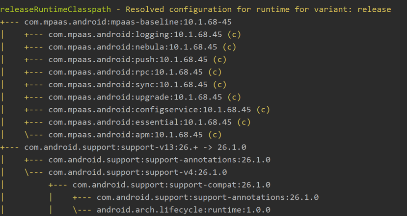

如何解决依赖冲突问题
一、现象
在Android开发过程中，经常会遇到依赖项冲突的问题。在build时，开发者会收到错误。例如下面的错误：
All com.android.support libraries must use the exact same version specification (mixing versions can lead to runtime crashes)
这个Log的意思是：support 库必须使用相同的版本，混用不同版本会导致运行时奔溃。
二、原因
上面例子的错误是因为：两个模块使用相同 jar 包的不同版本。在实际开中 studio 提示的错误信息可能不一致，但只要是依赖项冲突问题。 都可以用下面的思路解决。
三、解决方案
第一步：查找冲突的jar包
在Android studio 的 Terminal 窗口输入gradlew :xxxx:dependencies --configuration releaseRuntimeClasspath 命令，查看module的依赖树。xxxx需要替换为module name。
第二步：使用exclude排除重复的依赖项
语法介绍：
- transitive = true | false。True表示依赖项会被递归分析并添加到宿主module。false，宿主module不会添加依赖项的子依赖项。默认为true。
- maven格式是： <groupID>: <artifactID>: <version>。module: 后跟的就是artifactID，可参考这篇文章： maven格式介绍
四、其他
google建议指定依赖项时，不应使用动态版本号。如:
'com.android.tools.build:gradle:3.+'。
使用此功能可能会导致意外的版本更新和难以解析版本差异。